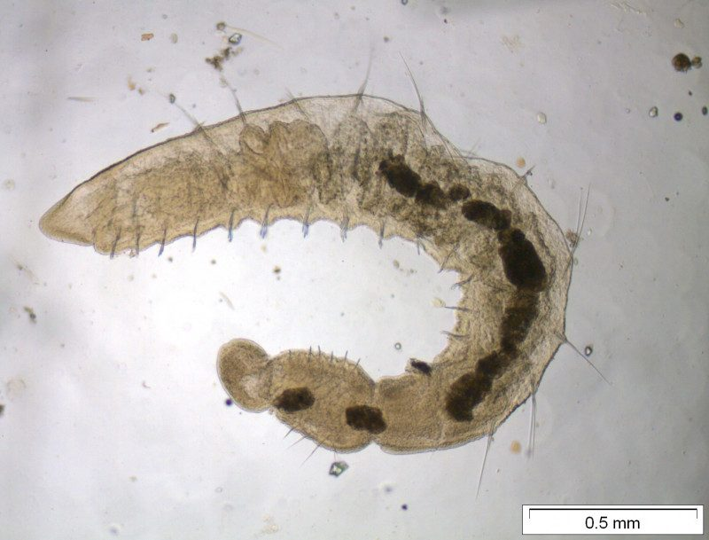

ब्रिसल्ड पॉन्ड वर्मBristled Pond Worm
Nais barbata · Naididae · SFL-0022

- Scientific name वैज्ञानिक नाम
- Nais barbata Müller, 1774
- Family कुल
- Naididae
- Hindi हिंदी
- ब्रिसल्ड पॉन्ड वर्म
- Local names स्थानीय नाम
- bristled pond worm
- Status here यहाँ की स्थिति
- native
- Movement आवागमन
- Resident, here all year
- Known from कहाँ दर्ज
- Others have published records from the wider Awadh–Purvanchal plain, none yet from Basti–Ayodhya अवध–पूर्वांचल से दूसरों के प्रकाशित अभिलेख, बस्ती–अयोध्या से अभी नहीं
- IUCN IUCN
- not evaluated
- Review समीक्षा
- not yet reviewed
When to look कब देखें
Present all year. साल भर मौजूद।
Tell it apart from इनसे अलग पहचानें
ब्रिसल्ड पॉन्ड वर्म / Bristled Pond Worm
Nais barbata Müller, 1774 — Naididae
ब्रिसल्ड पॉन्ड वर्म — तालाबों, तालों और पोखरों में जलकुंभी और अन्य जलीय पौधों की जड़ों और पत्तियों पर रेंगने वाला एक बहुत छोटा, पारदर्शी जलीय कृमि है। इसके सिर पर दो स्पष्ट आंख जैसे धब्बे होते हैं और पीठ पर बारीक कड़े बालों जैसे ब्रिसल्स निकले रहते हैं। इसमें कोई बाहरी गलफड़ा नहीं होता और यह जलीय पौधों पर जमी सूक्ष्म काई और कार्बनिक कणों को खाकर जीवित रहता है।
Quick Identification त्वरित पहचान
| Feature | Description |
|---|---|
| Appearance | Minute, transparent, active aquatic micro-annelid crawling on vegetation |
| Eyes | A pair of dark lateral eye-spots distinctly visible on the prostomium |
| Gills | Completely absent; posterior end simply tapered and rounded without a gill cup |
| Dorsal bristles | Prominent bundles of stiff, straight hair setae and single-pointed needles |
| Coloration | Translucent pale yellowish to brownish-yellow anteriorly |
| Locomotion | Swift crawling on submerged leaves; swims freely with active lateral undulations |
Field tip: Collect submerged stems of water plants or filamentous algae into a clear glass jar of pond water and illuminate from the side. Look for minute, hair-thin transparent worms crawling rapidly over leaf surfaces with deliberate creeping movements or swimming with rapid S-shaped flexions.
हिंदी:
यह जलीय पौधों की पत्तियों पर बहुत तेजी से रेंगता हुआ दिखाई देता है।
इसके सिर के पास दो छोटी काली आंखें साफ देखी जा सकती हैं।
इसके पिछले सिरे पर कोई गलफड़ा नहीं होता और यह पानी में तेजी से तैरता है।
Morphology आकारिकी
Measurements as given by Stephenson (1923, as Nais obtusa):
| Measurement | Range | Source |
|---|---|---|
| Length of single individuals | 3–5 mm | Stephenson (1923) |
| Segments of a single animal | 25–33 | Stephenson (1923) |
The body is minute, highly transparent, and pale yellowish to brownish-yellow anteriorly (Stephenson 1923). The prostomium is fairly short and rounded, bearing a pair of distinct dark lateral eye-spots. Ventral setal bundles on segments two to five contain two to five slender crotchets with proximal noduli and prolonged distal prongs; bundles on subsequent segments contain shorter, thicker crotchets with distal noduli (Stephenson 1923).
Dorsal setal bundles commence on segment six and consist of two to four single-pointed needle setae with slightly distal noduli, accompanied by one to three stiff, elongated hair setae that are approximately twice as long as the needles (Stephenson 1923). The posterior extremity lacks any specialized branchial fossa or respiratory appendages, ending simply at the rounded pygidium. Cutaneous gas exchange occurs directly across the general body wall.
हिंदी:
यह केवल तीन से पांच मिलीमीटर लंबा होता है और इसमें पच्चीस से तैंतीस खंड होते हैं।
सिर के दोनों तरफ काली आंखें होती हैं जो रोशनी को महसूस करती हैं।
इसके शरीर पर सांस लेने के लिए कोई अलग अंग नहीं होता बल्कि यह त्वचा से ही सांस लेता है।
Behaviour & Ecology व्यवहार और पारिस्थितिकी
An active, agile freshwater microdrile that occupies the phytal zone of standing and slow-moving water bodies. Unlike tube-dwelling mud worms, it lives primarily epiphytically, creeping over the submerged surfaces of rooted macrophytes, floating plant roots, and decaying organic debris.
It is capable of rapid free swimming, propelling itself smoothly through open water with rapid lateral sinusoidal waves. The species exhibits phototaxis, using its simple pigmented eye-spots to orient towards lighted surface zones where micro-algae and periphyton are most productive. It responds rapidly to tactile disturbance by contracting and swimming into deeper vegetation cover.
हिंदी:
यह कीचड़ में बिल बनाने के बजाय पानी के पौधों की सतह पर घूमना पसंद करता है।
रोशनी की तरफ आकर्षित होने के लिए यह अपनी आंखों का उपयोग करता है।
किसी खतरे की आहट पर यह तुरंत तैरकर घने पत्तों के बीच छिप जाता है।
Life Cycle / Phenology जीवन चक्र
Present year-round in freshwater habitats across eastern Uttar Pradesh. Asexual reproduction through transverse paratomy is extremely active during the warm, productive post-monsoon and autumn months. Fission zones develop repeatedly in mature individuals, producing short linear chains before the daughter zooids separate as autonomous worms.
Sexual reproduction occurs seasonally, typically during environmental fluctuations in late autumn or spring. Sexually mature worms develop clitellar glands across segments five to seven, mate reciprocally, and deposit oval, thick-walled cocoons on submerged plant surfaces or in benthic silt. These cocoons provide a resistant resting stage capable of enduring seasonal temperature extremes.
हिंदी:
अनुकूल मौसम में यह अपने शरीर से नए खंड बनाकर विभाजित होता रहता है।
एक ही कृमि कुछ ही दिनों में टूटकर कई नए जीवों को जन्म दे सकता है।
मौसम बदलने पर यह अंडों से भरे कोकून बनाता है जो पौधों पर चिपके रहते हैं।
Diet and Feeding Behaviour आहार
A micro-herbivore and detritivore that grazes actively on the epiphytic biofilm coating submerged vegetation:
- Epiphytic diatoms, unicellular green algae, and cyanobacteria scraped from plant surfaces
- Microscopic organic detritus and decaying plant fragments suspended in the water layer
- Bacteria, ciliates, and tiny rotifers ingested incidentally during biofilm grazing
The muscular pharynx creates suction that draws loose biofilm particles into the digestive tract, playing an important role in controlling micro-algal growth on macrophyte leaves.
हिंदी:
यह जलीय पौधों की पत्तियों पर जमी हरी काई और सूक्ष्म जीवों को खुरचकर खाता है।
इसके चरने से पौधों की पत्तियां साफ रहती हैं और उन पर सूर्य का प्रकाश पड़ता रहता है।
Predators / Natural Enemies शत्रु
A fundamental forage organism within the littoral food webs of Gangetic wetlands. It is preyed upon extensively by diverse small aquatic carnivores:
- Small wetland fishes, including juvenile gouramis, danios, and mosquito-eating surface feeders
- Carnivorous aquatic insects such as damselfly nymphs, water scorpions, and backswimmers
- Freshwater planarians, hydras, and small leeches active on submerged plant foliage
हिंदी:
छोटी मछलियां, जलीय बग और व्याध पतंगों के लार्वा इसे भोजन के रूप में ग्रहण करते हैं।
यह जलीय पारिस्थितिकी तंत्र में ऊर्जा प्रवाह की पहली सीढ़ी का काम करता है।
Agricultural / Human Relevance कृषि प्रासंगिकता
Contributes positively to freshwater aquaculture and wetland health. By grazing down excessive periphytic algae on aquatic plants in village fisheries, it prevents stagnation and facilitates gas exchange in littoral waters.
It does not damage cultivated crops and carries no human or animal pathogens. High densities of naidid worms in irrigation reservoirs provide natural, nutrient-rich live forage for fingerlings and young edible fishes.
हिंदी:
यह जलीय पौधों पर जमी अनावश्यक काई को साफ करके पानी को ताजा बनाए रखता है।
मछली पालकों के लिए यह तालाब में मौजूद एक बेहतरीन प्राकृतिक चारा है।
Expected Locally स्थानीय रूप से अपेक्षित
Not a field record. Written from published accounts for eastern Uttar Pradesh. No confirmed local sighting yet — if you have seen it, that is what the atlas needs.
अभी तक स्थानीय पुष्टि नहीं। यह विवरण प्रकाशित स्रोतों से है, किसी अवलोकन से नहीं।
Occurs on submerged vegetation and soft organic sediments of ponds, oxbow lakes, and marshy ditches across eastern Uttar Pradesh. It is especially frequent among the submerged root tangles of floating macrophytes and beds of submerged waterweeds throughout the year.
GBIF holds published records from the wider Awadh–Purvanchal plain, none yet from Basti–Ayodhya.
A confirmed first record from the district requires a clear photograph under magnification showing the eye-spots and dorsal hair setae, with date and coordinates, submitted through the About page.
हिंदी:
पूर्वी उत्तर प्रदेश के तालों और जलकुंभी की जड़ों में इस सूक्ष्म कृमि के मिलने की पूरी संभावना है।
साफ कांच के बर्तन में रखकर इसकी आंखों और बालों की तस्वीर लेकर पुष्टि की जा सकती है।
Distribution वितरण
Global range: Cosmopolitan distribution in freshwater ecosystems across the Palearctic, Nearctic, and Oriental regions (Stephenson 1923).
In India: Recorded from northern and eastern India, including documented historical collections from Uttar Pradesh and West Bengal (Stephenson 1923).
In Uttar Pradesh: Documented from historical aquatic surveys in Uttar Pradesh, including published records from Lucknow tanks.
In Basti district / eastern UP: Expected as a common resident inhabitant of vegetated wetlands, tanks, and slow ditches.
हिंदी:
यह भारत सहित दुनिया के अनेक देशों के मीठे पानी में पाया जाता है।
उत्तर प्रदेश में यह लखनऊ और आसपास के क्षेत्रों के जलाशयों से पहले भी दर्ज किया जा चुका है।
Research Questions शोध प्रश्न
- Which aquatic macrophyte species support the highest densities of epiphytic worms in local wetlands? / स्थानीय तालाबों में किस जलीय पौधे की पत्तियों पर यह कृमि सबसे अधिक संख्या में मिलता है?
- How does population density respond to seasonal blooms of epiphytic diatoms during winter? / सर्दियों में काई के अत्यधिक बढ़ने पर इसकी संख्या में कितनी वृद्धि होती है?
- What is the swimming speed and endurance of local individuals when escaping benthic predators?
- Can classroom experiments with light and shade demonstrate phototaxis in this species to schoolchildren? / क्या स्कूली छात्र कक्षा में प्रकाश और छाया के प्रयोगों द्वारा इसके देखने की क्षमता का अध्ययन कर सकते हैं?
- Does the use of chemical herbicides to clear water hyacinth cause mass mortality of epiphytic micro-annelids?
हिंदी:
जलकुंभी हटाने के लिए रसायनों के छिड़काव से इन छोटे जीवों पर क्या असर पड़ता है?
स्कूली बच्चे कांच की नली में रोशनी डालकर इसकी चलने की दिशा का अध्ययन कर सकते हैं।
Similar Species मिलती-जुलती प्रजातियाँ
| Species | How to tell apart | हिंदी |
|---|---|---|
| Finger-gilled Pond Worm (Dero digitata) | Posterior extremity expanded into a ciliated branchial fossa with gill lobes; lacks eye-spots; inhabits mud tubes | फिंगर-गिल्ड पॉन्ड वर्म |
| Branchiodrilus Worm (Branchiodrilus hortensis) | Distinct lateral finger-like gills projecting along body flanks; larger size; lacks eye-spots | ब्रैंकियोड्रिलस वर्म |
| Indian Common Earthworm (Metaphire posthuma) | Vastly larger terrestrial oligochaete with thick opaque body wall, no eyes, and no hair setae | केंचुआ |
Field rule: A minute, transparent aquatic worm with dark eye-spots and stiff dorsal bristles that lacks any respiratory gills on its body or tail is Nais barbata.
हिंदी:
Finger-gilled Pond Worm के पिछले सिरे पर गलफड़े होते हैं और उसमें आंखें नहीं होतीं।
Branchiodrilus Worm के पूरे शरीर पर गलफड़े होते हैं जबकि इसमें कोई गलफड़ा नहीं होता।
Taxonomy & Classification वर्गीकरण
Original description. Described by Otto Friedrich Müller in 1773 (published 1773/1774) as Nais barbata in Vermium Terrestrium et Fluviatilium, 1(1), p. 23; type locality: Denmark.
Subspecies. Monotypic; Nais obtusa (Gervais, 1838), described in older Indian literature (Stephenson 1923), is treated as a junior subjective synonym in modern taxonomy (rule 32).
Family and order placement. Belongs to the family Naididae, subclass Oligochaeta, and order Tubificida.
Phylogenetic notes. Represents the type genus of the family Naididae, characterised by cephalic eye-spots, swimming ability, and single-pointed needle setae.
IUCN status rationale. Not evaluated (NE) on the global IUCN Red List of Threatened Species; ecologically secure, widely distributed, and abundant.
हिंदी:
इसे 1773 में ओटो फ्रेडरिक मुलर द्वारा वर्णित किया गया था।
पुरानी किताबों में इसे Nais obtusa के नाम से भी लिखा गया है जो इसी का दूसरा नाम है।
Photo Gallery फोटो गैलरी
No photos yet — add field photos to media/species/bristled_pond_worm/ and run node scripts/sync_photos.js.
Photos needed आवश्यक फोटो
- [ ] Microscopic view of head showing distinct lateral eye-spots (सिर पर आंख के धब्बों की तस्वीर)
- [ ] Live worm swimming or crawling on submerged leaf edge (पौधे की पत्ती पर रेंगते कृमि की तस्वीर)
References संदर्भ
- Müller, O. F. (1774). Vermium Terrestrium et Fluviatilium, seu Animalium Infusoriorum, Helminthicorum, et Testaceorum, non Marinorum, Succincta Historia. Havniae & Lipsiae: Heineck & Faber, 1(1), p. 23.
- Stephenson, J. (1923). The Fauna of British India, including Ceylon and Burma. Oligochaeta. London: Taylor and Francis, pp. 61–62 (as Nais obtusa).
- GBIF Occurrence Data — Nais barbata, India (2025).
Source file: species/fauna/soil_fauna/bristled_pond_worm.md